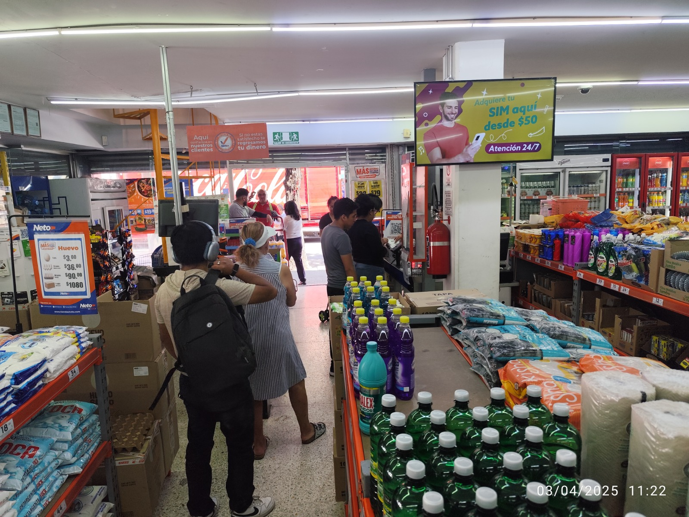

Monitoreo OOH y DOOH en México:
cobertura real, evidencia verificable
Supervisamos en campo tus campañas de publicidad exterior tradicional y digital en México: espectaculares, vallas, pantallas LED, mupis digitales y circuitos DOOH en aeropuertos, centros comerciales y cadenas de retail. Con reportes proactivos y alertas en tiempo real.
OOH y DOOH: dos formatos, un mismo riesgo de exposición
Cada formato tiene sus propias vulnerabilidades. Nuestro monitoreo está diseñado para cubrir ambos con criterios específicos.
Publicidad Exterior Tradicional
- Vallas y espectaculares en ejes viales
- Bardas pintadas y lonas
- Puentes peatonales y parabuses
- Mobiliario urbano y mupis estáticos
- Tapiales en obras y construcciones
Riesgos típicos: Daño por lluvia o viento, vandalismo, obstrucción por vegetación o construcciones, decoloración del material.
Publicidad Exterior Digital
- Pantallas LED en espectaculares urbanos
- Mupis digitales en parabuses
- Circuitos de pantallas en aeropuertos
- Displays digitales en centros comerciales
- Pantallas en restaurantes, bancos y cines
Riesgos típicos: Pantalla apagada o con error, contenido incorrecto o desactualizado, falla en el loop de transmisión, tiempo de spot menor al contratado.
Por qué el monitoreo OOH protege tu inversión en México
El mercado publicitario exterior en México mueve miles de millones de pesos al año. Sin monitoreo, una parte significativa de esa inversión se pierde sin que nadie lo sepa.
→Visibilidad real vs. visibilidad contratada
Los contratos OOH garantizan tiempo de exposición, pero no validan las condiciones del anuncio durante ese tiempo. Un espectacular dañado o una pantalla apagada durante una semana en un eje principal puede representar pérdidas significativas que sólo el monitoreo puede documentar.
→Detección temprana de incidencias
Las campañas OOH duran semanas. Un problema detectado en los primeros días puede corregirse a tiempo. Uno detectado al cierre de la campaña sólo genera un reclamo, pero la oportunidad ya se perdió.
→Respaldo para post-campaña y medición
El expediente de monitoreo enriquece el análisis post-campaña: permite correlacionar el estado real del anuncio con los datos de awareness o ventas registrados durante el mismo periodo.

"Notamos satisfacción en el área comercial desde que Publiser está supervisando nuestras campañas."
— Victor Morones · Promo Espacio
Cómo monitoreamos OOH y DOOH en México
Un proceso diferenciado para publicidad estática y digital, con criterios de evaluación específicos para cada formato.
Monitoreo OOH (formatos estáticos)
Verificamos integridad del vinilo o lona: sin rasgaduras, decoloración, humedad ni partes despegadas.
Fotografía desde el ángulo de máximo impacto al conductor o peatón, evaluando obstrucciones.
Para anuncios luminosos, verificamos el funcionamiento del sistema de iluminación en horario nocturno cuando aplica.
Documentamos cambios en el entorno inmediato: obras, vegetación crecida, nuevas instalaciones que reduzcan la visibilidad.
Monitoreo DOOH (formatos digitales)
Verificamos que la pantalla esté operativa, sin franjas muertas, pixeles quemados ni fallas de color visibles.
Confirmamos que el spot o imagen desplegados corresponden al material aprobado, no a contenido de otra marca o de pantalla en blanco.
Verificamos que el contenido desplegado corresponda a la campaña activa y no a materiales de periodos anteriores.
Para circuitos interiores (aeropuertos, plazas), evaluamos la posición de la pantalla respecto al flujo peatonal y la saturación visual de la zona.
Marcas que monitoreamos en la CDMX
Hemos trabajado con marcas líderes en retail, entretenimiento, banca y consumo masivo.
Preguntas frecuentes sobre monitoreo OOH y DOOH
¿Cuál es la diferencia entre OOH y DOOH?
OOH (Out-of-Home) es publicidad exterior tradicional: vallas, espectaculares, lonas y mobiliario urbano estático. DOOH (Digital Out-of-Home) son los formatos digitales: pantallas LED en espectaculares, mupis digitales, circuitos en aeropuertos, centros comerciales o restaurantes.
¿El monitoreo DOOH verifica el contenido correcto en pantalla?
Sí. Para DOOH verificamos que el contenido desplegado corresponda al material aprobado, que la pantalla esté encendida y funcional, y que la campaña esté vigente y no sustituida por material de otro anunciante o de periodos anteriores.
¿Con qué frecuencia recomiendan monitorear?
Recomendamos al menos tres visitas: inicial (primeras 48 horas), intermedia y final. Para campañas en ejes viales premium o lanzamientos de alta visibilidad, recomendamos visitas semanales para maximizar la protección de la inversión.
¿Pueden monitorear campañas OOH fuera de la CDMX?
Nuestra operación principal es en CDMX y Zona Metropolitana. Para campañas en otras ciudades evaluamos la viabilidad según el volumen y los plazos. Contáctanos con los detalles para una propuesta personalizada.
Servicios que complementan el monitoreo OOH
Cotiza el monitoreo OOH o DOOH de tu campaña
Cuéntanos el número de puntos, el formato (OOH o DOOH) y las fechas de tu campaña. Te respondemos con propuesta en menos de 24 horas.